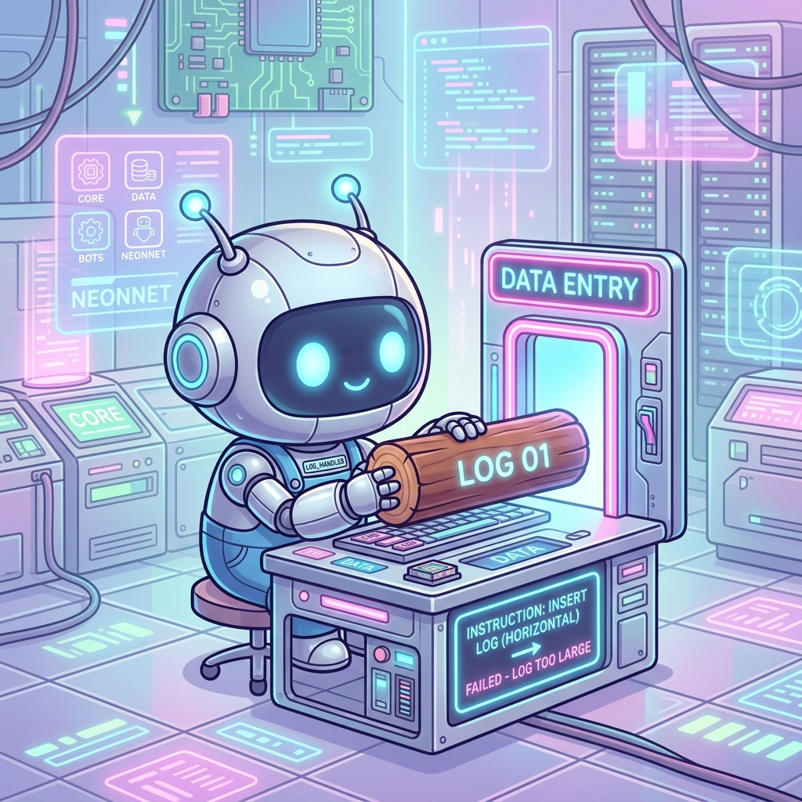
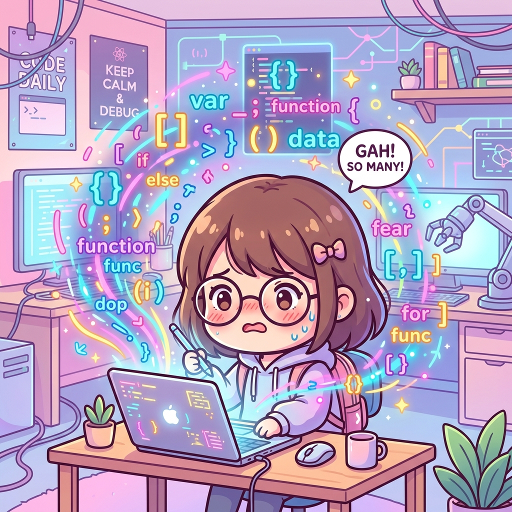
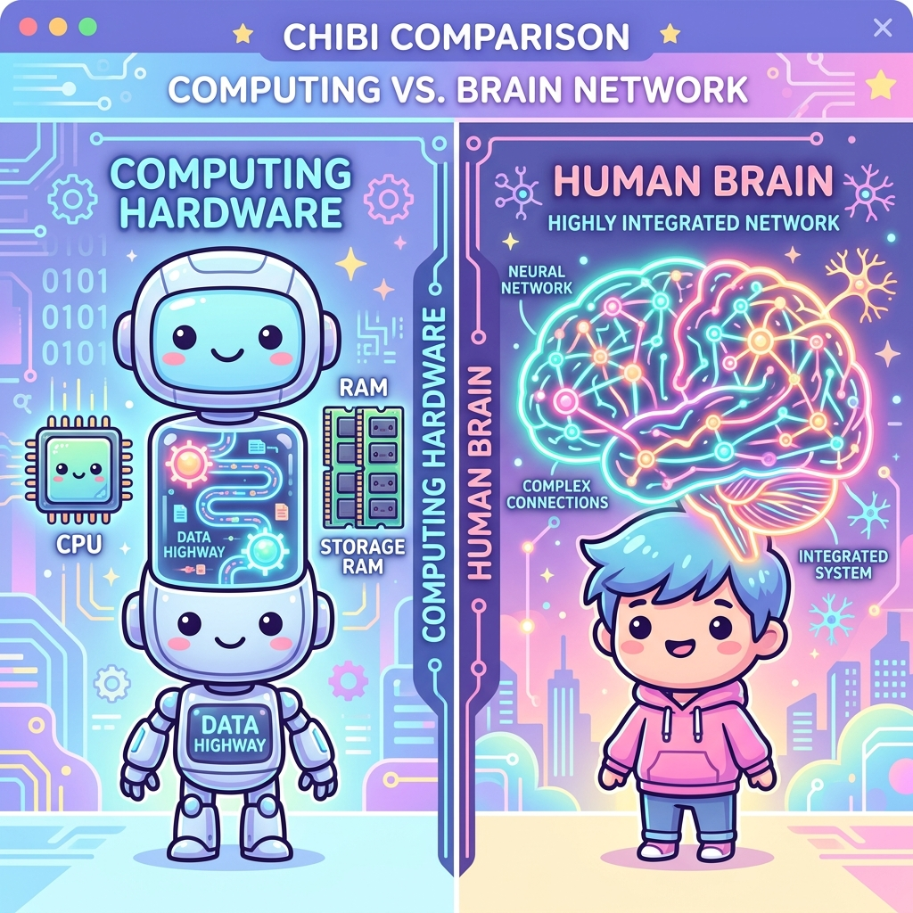
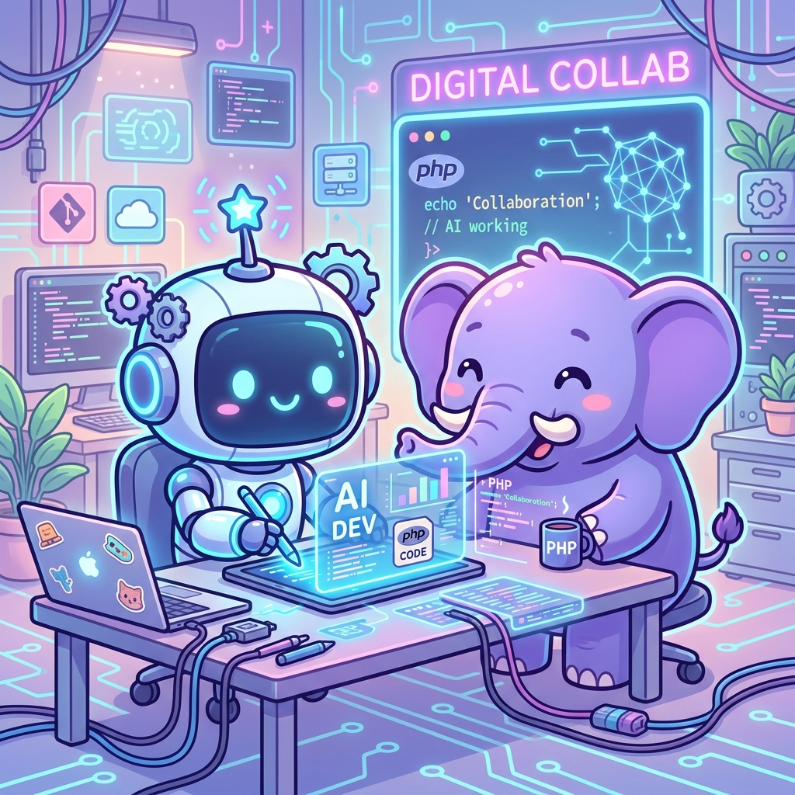
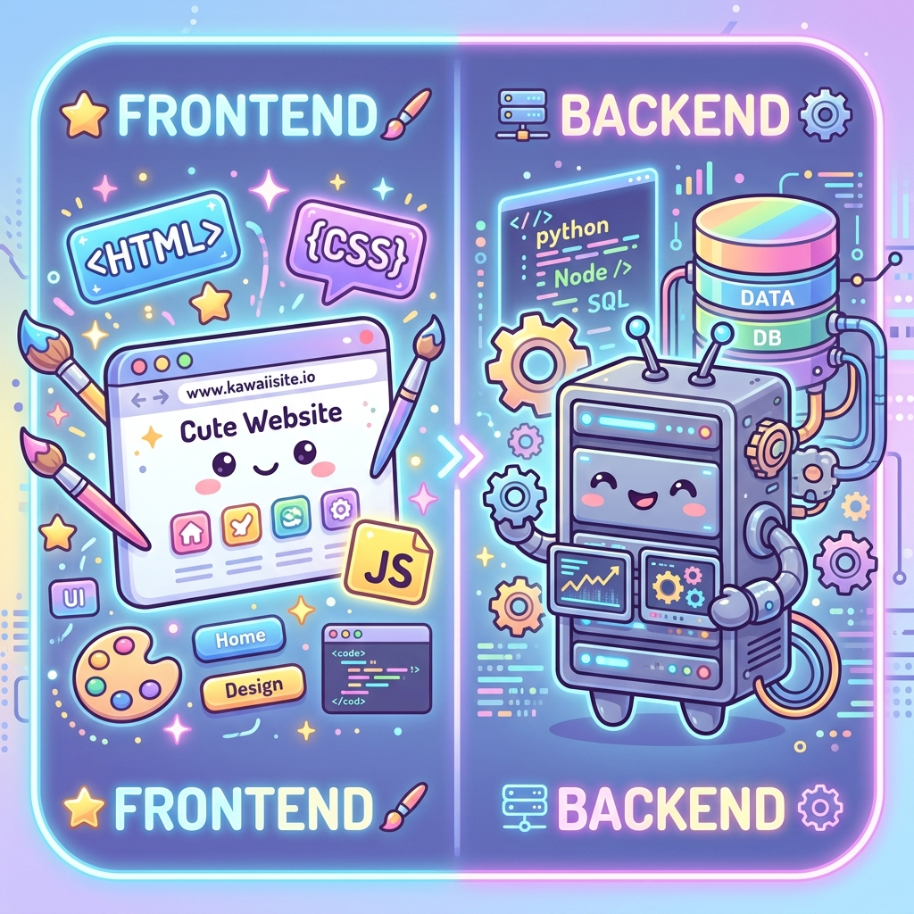
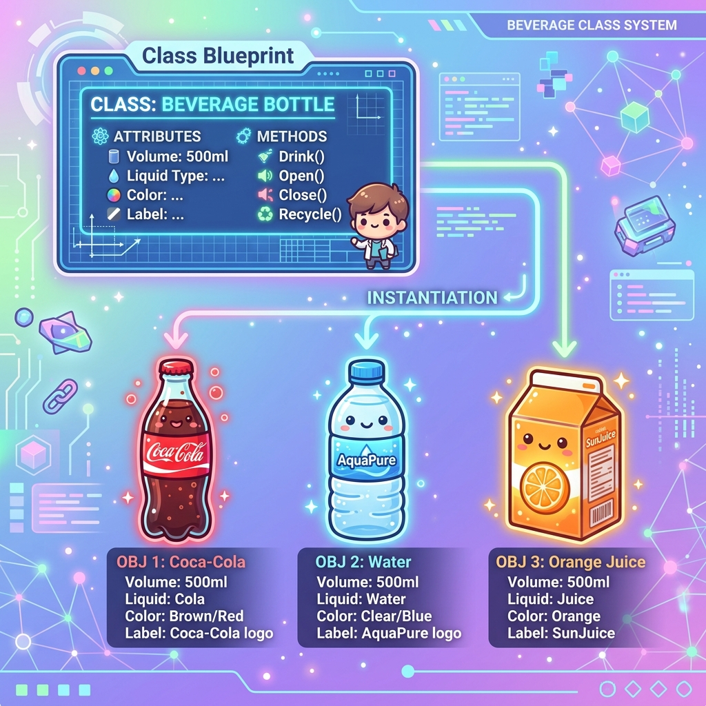

1. 電腦：一個無比乖巧卻又很「笨」的孩子

在現代科技（特別是強大的 AI）環繞下，我們常下意識地覺得電腦很聰明：它能做超高難度的算術、能精準播放我們想看的影片。
但事實上，電腦其實是一個非常乖巧、同時卻也很「笨」的孩子。
為什麼說它無比乖巧？因為它是真的會 100% 照著你寫的指令做。即使指令寫錯了，它也會忠實地執行錯誤，絕不會自己擅自變通。
但也就是因為它這麼聽話，所以它顯得非常「笨」——就像俗話說的「木頭橫的拿不進門，不知道換成直的拿進去」。電腦不會自發性地變通。這也是非資訊科系的學生在剛接觸程式時最大的挫折感來源。我們人類覺得理所當然的事（「不就是這樣嗎？」），在電腦面前，你卻會驚訝地發現：「天啊，連這個細節也要我一步一步跟電腦講嗎？」
2. 新手學習程式的兩大隱形難關
不論你是要體驗新潮的 Vibe Coding，還是想按部就班學寫程式，只要碰到程式碼，幾乎所有人都會撞上這兩個隱形難關。提早認識它們，能幫你建立更好的心理建設！

1 難關一：語法與規則的「資訊爆炸」
寫程式的第一道門檻就是對「語法」的恐懼。像 C 語言體系，到處都是大括號 `{}`、小括號 `()`，每行結尾還要強制打分號 `;`；換到 Python 又變成了嚴格的「縮排 (Indentation)」來分段。新手一看到這些密密麻麻的規則，常會覺得「這只是冰山一角，我怎麼可能學得完？」，進而感到焦慮並放棄。請放心，語法只是一種溝通橋樑，多寫幾次，大腦就會慢慢習慣。
2 難關二：『理所當然』與『精密轉譯』的思維落差
人類大腦非常聰明，當我們看到一個平板電腦，我們的腦袋會瞬間做出複雜思考：知道它好不好看、有什麼用途、能帶來什麼價值。我們把這一切視為「理所當然 (Take it for granted)」，完全不需要耗費腦力去拆解。但電腦沒有這種常識！它需要你把所有細節，一步一步拆解成最基礎的指令。這種「我們以為很直覺，電腦卻聽不懂」的思維轉譯落差，就是新手最常感到挫折的原因。
3. 人腦 vs. 電腦：馮紐曼架構的侷限

雖然我們在很多 AI 或計算的層面上想讓電腦學習「人類的大腦」，但受限於硬體架構，電腦和人腦有著天壤之別。
💻 電腦：馮紐曼架構 (von Neumann)
現代電腦幾乎都採用「馮紐曼架構」——它把「計算 (CPU)」與「記憶 (RAM)」分成兩個獨立的硬體。就像把兩個功能蓋在不同的山頭上，中間需要一條通道（資料匯流排）來傳遞資料。這會導致在資料往返時產生硬體效率瓶頸，並伴隨嚴重的散熱與耗電問題。雖然電腦算大數字極快，但架構本質是分裂的。
🧠 人腦：超高集成神經網絡
人腦則完全不同，是由無數個神經元與突觸構成。每一個神經元既能做運算，同時也能儲存記憶。它們還會動態伸出觸手（突觸）去連接其他神經元，形成記憶迴路。人腦的運作集成度極高，在大規模模糊決策時的效率與學習成本極低，且耗電量（能量消耗）遠比同等級的電腦低得多。
即使電腦算純數學比人類快上百萬倍，但人類大腦的理解、聯想與低耗能學習機制，在架構上仍遙遙領先現代電腦。而且，人類至今對大腦運作的了解，也僅僅是冰山一角。

4.1 AI 的聰明是怎麼來的？
現代 AI 看起來非常聰明，但這並非因為它真的會自主思考。其本質上是工程師設計了算法，讓電腦在特定事情上重複學習了上百億次，它才終於學會了該怎麼做。它依舊是建立在「重複執行指令」的極致體現。
4.2 PHP 與 Laravel 的市占地位
在非 AI 領域的網站開發中，最常使用的是像 Laravel 這樣的框架。它底層採用的語言是 **PHP**。你知道嗎？目前全世界高達 78% 的網站 都是由 PHP 在幕後默默支持的。不論是 PHP 還是其他程式語言，本質上都是我們人類用來指引電腦這個「笨孩子」的一步步步驟說明書。
5. 前端與後端的概念 (Frontend & Backend)

🎨 前端 (Frontend)：網頁的「門面」
前端負責所有「使用者看得到、點得到」的畫面與互動。就像是一間餐廳的裝潢、菜單和服務生。
- HTML (結構)：網頁的骨架（例如文字、按鈕、輸入框）。
- CSS (樣式)：網頁的衣服與化妝（例如顏色、排版、字體大小）。
- JavaScript (互動)：網頁的大腦動作（例如按鈕點擊後的動畫、彈出視窗）。
- 熱門前端框架/庫：
- React / Vue / Angular：幫助開發者更高效、更有結構地打造複雜的單頁應用程式 (SPA)。
- Next.js：基於 React 的框架，提供更好的網頁載入效能與 SEO 優化。
⚙️ 後端 (Backend)：網頁的「大腦與廚房」
後端負責處理「看不見的邏輯、資料運算與儲存」。就像是餐廳廚房裡的廚師、食材庫存管理與收銀系統。
- Node.js (JS系)： 讓 JavaScript 也能在伺服器端執行，常用框架如 Express, NestJS。適合高併發、即時應用（如聊天室）。
- PHP： 傳統網頁開發霸主，搭配框架 Laravel。開發速度極快、市占率極高（全世界 78% 網站）。
- Java： 穩定、安全、適合超大型企業系統，搭配框架 Spring Boot。是金融與大型電商系統的首選。
- Python： 語法簡潔，搭配框架 Django (全功能大包) 或 Flask (輕量級)。在人工智慧與數據分析領域最受歡迎。
6. 從資料型態到物件導向 (OOP) 的發明
在寫程式時，有許多種不同的風格，而現在最流行、也最被廣泛應用的風格叫做 物件導向 (Object-Oriented Programming, 簡稱 OOP)。我們所學的 Laravel 本質上就是使用這個風格撰寫的。
在傳統寫程式時，變數是用來儲存資料的容器。在強型別語言（如 Java/C++）中，你必須嚴格宣告（Declare）變數能存什麼資料；而在弱型別語言（如 PHP/JS）中，雖然不強迫宣告，但電腦自己也會在執行時去判斷它的型態。
然而，傳統的資料型態只有 `string` (字串)、`int` (整數)、`bool` (布林值) 等。但在現實生活中，我們要描述一個東西，例如「一隻筆」或「一瓶水」，是無法單純用這幾個基本型別就定義清楚的。

這就體現了為什麼說「電腦很笨」。當人類看到一隻筆，腦袋會下意識聯想它的用途、墨水顏色、握感。但電腦不懂！所以我們發明了 **物件導向 (OOP)**：我們把世界上的所有東西，都看作一個個的「物件 (Object)」。
既然是個東西，我們就會在腦袋中給它賦予很多屬性。例如「一瓶水」，我們知道它包含：瓶子、蓋子、內容物、標籤、高度、圓周和功用。
在這裡，我們就碰到了前面提到的第二個難關：『理所當然』與『實際操作』的思維落差。人類看到一瓶水覺得理所當然，但對電腦來說，如果不進行具體的操作拆解，它就完全無法理解。這就是為什麼我們需要使用 **物件導向 (OOP)** 的語法，老老實實地為電腦寫一份「水瓶說明書」（類別 Class）。
對於程式而言，電腦不知道什麼是一瓶水，所以我們要寫一份「類別 (Class) 藍圖」介紹給它看：
7. 讓我們用程式碼跟電腦介紹「一瓶水」
class WaterBottle {
// 1. 屬性 (Properties)
public $brand;
public $color;
protected $volume;
public function __construct($brand, $color, $volume) {
$this->brand = $brand;
$this->color = $color;
$this->volume = $volume;
}
public function drink() {
return "喝了一口 " . $this->brand;
}
}
// 2. 實例化
$cocaCola = new WaterBottle("可口可樂", "紅色", 500);
echo $cocaCola->drink();
🧬 繼承 (Inheritance) 的概念
如果我們寫好了一個「動物」的類別（有呼吸、會睡覺的特質），當我們想創造「小狗」的類別時，我們不需要重複去寫呼吸和睡覺。我們直接讓小狗「繼承 (extends)」動物，小狗就會自動學會呼吸和睡覺！我們只需要專注在寫小狗專屬的特徵（例如：會汪汪叫）。
🔒 存取控制修飾詞 (Access Modifiers)
電腦很聽話，但有時候我們想保護一些內部秘密。我們可以用 `public` (大家都能用)、`private` (只有這瓶水自己知道，別人不能看)、`protected` (只有親屬繼承的人能看) 來控管權限，確保程式 safe 又整潔。
8. 總結：分而治之 (Divide & Conquer) 與你的總工程師大腦
學習了這麼多知識後，我們該如何串聯它們？無論你是要自己動手手寫程式，還是在 AI 時代下進行 Vibe Coding，有一個最重要的計算機科學核心思維你必須掌握：「分而治之 (Divide and Conquer)」，這叫做 computational thinking。
電腦很笨、只懂得 0 與 1、對與錯、陰與陽。要讓這個笨孩子幫你解決龐大的現實問題，你必須學會兩件事：
- 第一步：定義問題 (Define the Problem)：明確找出你要解決的核心痛點是什麼，以及為什麼要解決它。
- 第二步：精確拆解 (Decompose)：將一個巨大的問題，拆解成數個中型問題；再把中型問題，拆解成數個極小、甚至是非黑即白的微型子任務。
🤖 與 AI 的黃金合作法則
在開發中，AI 就像是那個「最棒的搬磚工具人
(Mason)」，它寫程式非常快，非常擅長重複性、機械式的代碼填充與細節操作。但你才是那個掌控全域的「總工程師 (Chief
Engineer)」。
如果你把專案全權交給 AI 自由發揮，它會亂改程式、亂套語法、產出臃腫不堪的代碼。你必須用你的工程師大腦去規劃架構、考慮程式擴充性
(Extensibility)、遵守開發規範、做好分工（例如知道何時該去修改 Laravel 的 web.php
檔案）。由你來做好「分而治之」的拆解，再交給 AI 去把磚頭碼好。這才是未來工程師的核心競爭力！